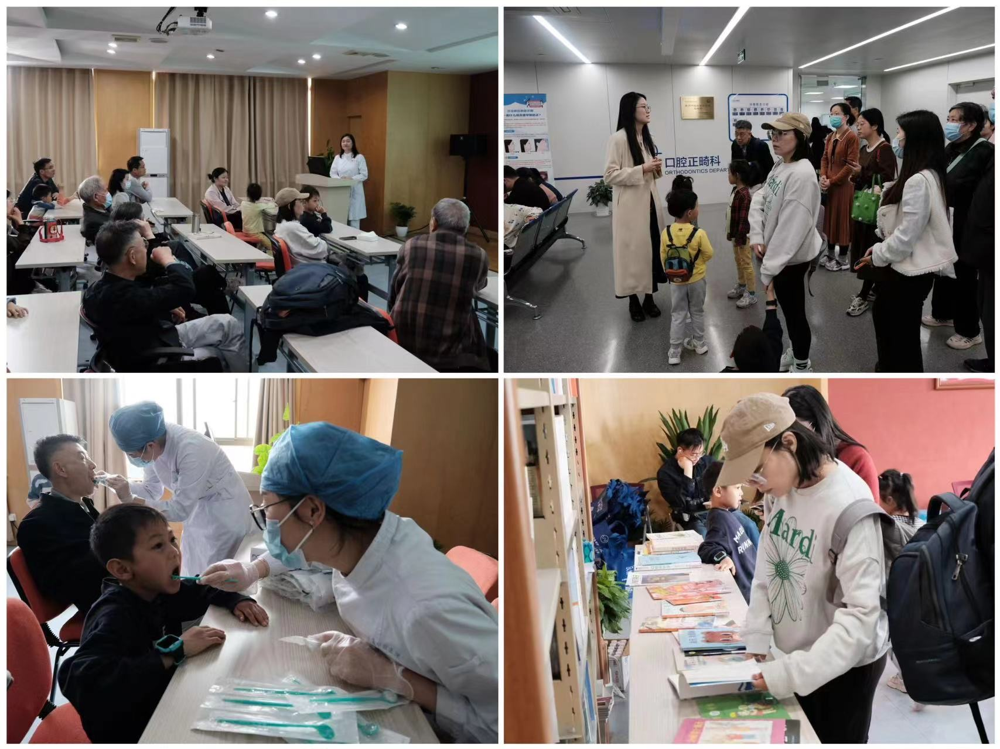
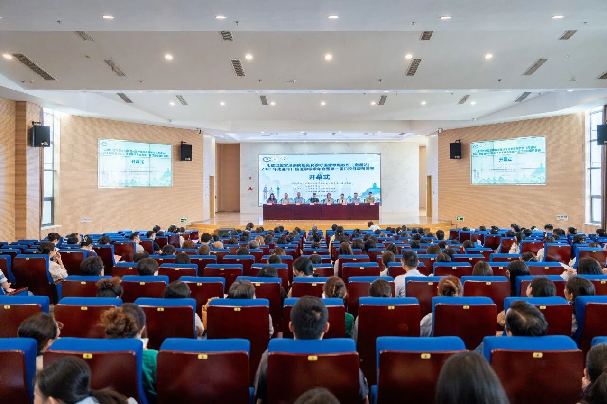
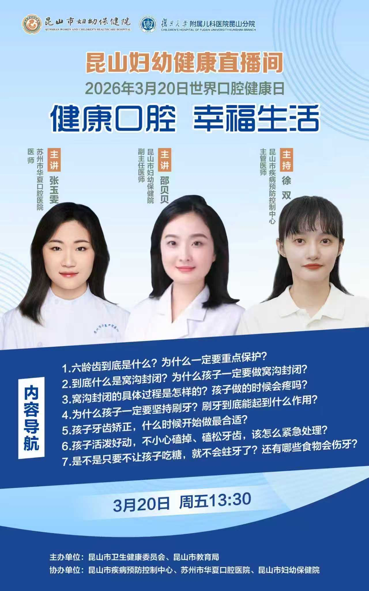
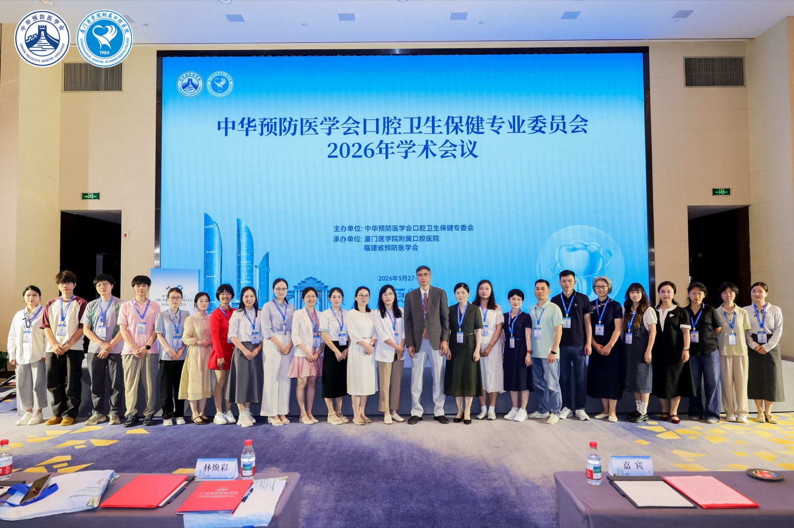
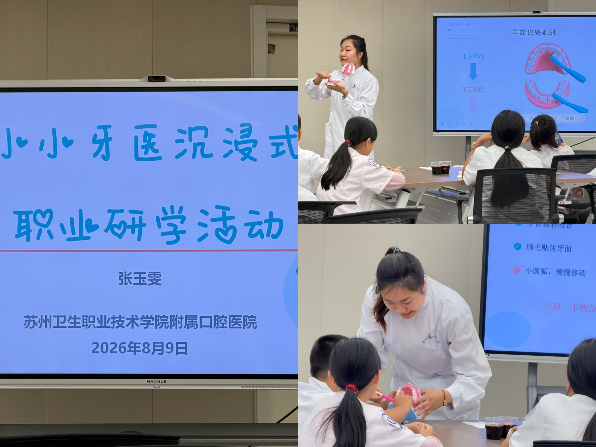

I am a pediatric dentist at Suzhou Huaxia Stomatological Hospital, working on the prevention of dental caries in children. During my M.Med. at Sun Yat-sen University under Prof. Huancai Lin, I showed that poly(γ-glutamic acid) can act as a non-collagenous protein analog, stabilizing amorphous calcium phosphate and inducing hierarchical intrafibrillar mineralization of type I collagen. I have also contributed to studies of the oral microbiome in severe early childhood caries. Since 2024 I have been an implementer of the Suzhou Pediatric Oral Health Epidemiological Survey.
Keywordsbiomimetic mineralization · caries prevention · oral microbiome · early childhood caries · oral epidemiology
1Research
1.1Suzhou Pediatric Oral Health Epidemiological Survey
- Conducted standardized on-site oral examinations to establish health baselines for school children and track disease trends.
- Collected, validated and cleaned large-scale questionnaire data on the oral health knowledge, attitudes and behaviors of children and parents, including service use and demand.
- Performed core statistical analyses for the final municipal report supporting the evaluation of regional oral health programs.
1.2PGA-mediated biomimetic mineralization of type I collagen
- Synthesized poly(γ-glutamic acid)-stabilized amorphous calcium phosphate (PGA-ACP) with varying molecular weights and concentrations; fabricated 2D thin-layer matrices and 3D type I collagen scaffolds from rat tail tendon.
- Tracked dispersion stability by optical density, pH, particle size and zeta potential, validating PGA as a non-collagenous protein analog that induces hierarchical intrafibrillar mineralization.
- Characterized mineralized scaffolds with TEM, SEM, XRD, FT-IR and TGA.
- Biomaterials
- Collagen extraction, 2D/3D scaffolds, biomimetic mineralization; XRD, FT-IR, TG/DTG, EDS
- Microscopy
- SEM, TEM, selected area electron diffraction (SAED)
- Clinical & epidemiology
- Pediatric diagnosis and behavior management; survey design, data cleaning, biostatistics
2Publications
2.1First and co-first author
- Zhang Y†, Chen T†, Gu L, et al. Effect of the stability of the poly(γ-glutamic acid)–ACP dispersion system on biomimetic mineralization of type I collagen. Biomater Sci. 2025;13(3):795–809.
- Yuan R†, Zhang Y†, Liao L, et al. Biomineralization-inspired anti-caries strategy based on multifunctional nanogels as mineral feedstock carriers. Int J Nanomedicine. 2023;18:4933–4947.
- Zhang Y, Li B, Ge B, et al. Survey on oral health status of second-grade primary school students in Suzhou City. Stomatology. 2025;(8). In Chinese.
2.2Co-author
- Weng L, Cui Y, Jian W, Zhang Y, et al. Inter-kingdom interactions and environmental influences on the oral microbiome in severe early childhood caries. Microbiol Spectr. 2025;13(6):e02518-24.
- Li P, Zhang Y, Chen D, Lin H. Investigation of a novel biofilm model close to the original oral microbiome. Appl Microbiol Biotechnol. 2024;108(1):330.
- Wang Y, Zhang Y, Pan T, et al. Metabolic differences of the oral microbiome related to dental caries: a pilot study. Arch Oral Biol. 2022;141:105471.
- Cui Y, Wang Y, Zhang Y, et al. Oral mycobiome differences in various spatial niches with and without severe early childhood caries. Front Pediatr. 2021;9:748656.
† These authors contributed equally. Journal metrics: JCR quartile and impact factor.
3Clinical Experience
3.1Pediatric Dentist · Suzhou Huaxia Stomatological Hospital
- Independently manage pediatric dental cases of moderate to high complexity, using behavior management and minimally invasive techniques.
- Public education: co-launched Journey to Healthy Teeth with Suzhou Library, produced the hospital's Childhood Dental Trauma video column, and spoke in the World Oral Health Day live stream.
3.2Resident Dentist · Hospital of Stomatology, Sun Yat-sen University
- Completed standardized residency rotations in endodontics, periodontics, pediatric dentistry, oral surgery and prosthodontics at a tertiary hospital, building skills in differential diagnosis and evidence-based clinical reasoning.
3.3Dental Intern · Suzhou Stomatological Hospital
- Completed multidisciplinary rotations, assisting senior dentists in the diagnosis and treatment of common oral diseases, with strict aseptic technique and standardized medical records.
4Outreach & Activities Supplementary materials





5Education
| Degree | Institution | Period | GPA | Supervisor |
|---|---|---|---|---|
| M.Med.Dentistry | Sun Yat-sen UniversityaGuangzhou, Guangdong | 2020.09–2023.06 | 86.8 / 100 | Prof. Huancai Lin |
| B.Med.Dentistry | Wannan Medical UniversityWuhu, Anhui | 2015.09–2020.06 | 84.5 / 100 | — |
a Sun Yat-sen University is ranked 65th in the world by ARWU, 74th by U.S. News Best Global Universities, and 91st for Dentistry by QS.
6Honors & Awards
| Award | Year |
|---|---|
| Suzhou Huaxia Stomatological Hospital | |
| Outstanding Employee | 2025 |
| Outstanding Employee | 2024 |
| Sun Yat-sen University | |
| Third-Class Academic Scholarship | 2023 |
| Third-Class Academic Scholarship | 2022 |
| Third-Class Academic Scholarship | 2021 |
| National Academic Conference of the Preventive Dentistry Committee | |
| Outstanding Poster Award | 2022 |
| Suzhou Stomatological Hospital | |
| Outstanding Intern Award | 2020 |
| Second Prize, Intern Case Report Competition | 2019 |
| Wannan Medical University | |
| Scholarship for Excellence in Youth League and Student Affairs | 2019 |
| Outstanding Youth League Officer | 2018 |
| Scholarship for Excellence in Youth League and Student Affairs | 2018 |
| Scholarship for Excellence in Arts and Cultural Activities | 2018 |
| Second-Class Academic Scholarship | 2018 |
| Merit Student Award | 2018 |
| Outstanding Student Union Officer | 2017 |
| Second-Class Academic Scholarship | 2017 |
| Second-Class Academic Scholarship | 2016 |